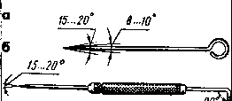
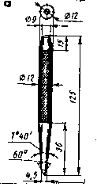
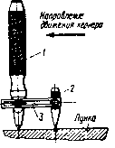
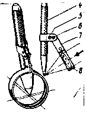
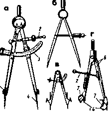
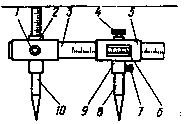
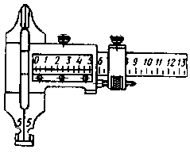
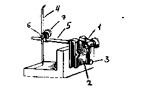

РАЗМЕТКА. ИНСТРУМЕНТЫ
| Рисунки инструментов | Характеристика инструментов |
|---|---|
|  |
Чертилки – служат для нанесения линий (рисок) на разметочную поверхность с помощью линейки, угольника шаблона.
- чертилки изготовляют из инструментальной стали У10; У12, длиной 150-200мм, диаметром 4-5мм и с углом заострения 15° - широко применяются 4 вида чертилок: круглую с отогнутым концом, со вставной иглой, карманную. |
|  |
Кернер – применяется для нанесения углублений (кернов) на предварительно размеченных линиях, чтобы риски были отчётливо видны и не стирались в процессе обработки детали.
Кернеры изготавливают из инструментальной стали, углеродистой или легированной У7А; УВА; 7ХВ; 8ХВ. Рабочая часть имеет твердость НRC 55-59 на длине 15-30мм, ударная часть – HRC 40-45, на длине 15-25мм. Средняя часть имеет рифление для удобства работы. Рабочая часть имеет твердость НRC 55-59 на длине 15-30мм, ударная часть – HRC 40-45, на длине 15-25мм. Средняя часть имеет рифление для удобства работы. Обыкновенный кернер – стальной стержень L=100, 125, 160мм, d= 8, 10, 12ммсоответственно, сферический боёк, угол заточки – 50-60°, для более точной разметки – <30-45°, для более точной разметки – <30-45°, для разметки центров отверстий <75° |
|  |
Кернер шаговый – состоит из 2-х кернеров - основного – 1, вспомогательного – 2, скреплённых общей планкой – 3.
Первое углубление накернивают кернером – 1, затем в полученное углубление вставляют кернер – 2 и ударом молотка по кернеру 1 накернивают углубление. После этого кернер – 2 переставляют в следующее положение. Шаг между отверстиями выдерживается автоматически, чем достигается точность разметки и повышение производительности. |
|  |
Кернер с лупой состоит из хомутиков 5 и 7, соединенных винтом – 6 и затягиваемых после установки лупы – 8 по зрению рабочего.
В хомутике 7 помещается 3…5 кратная лупа, хомутик – 5 служит для установки лупы на кернер – 4 по высоте её крепления. |
|  |
Циркули – используют для разметки окружностей и дуг, деления отрезков и окружностей, а также для геометрических построений. Циркулями пользуются и для переноса размеров с измерительных линеек на деталь.
Разметочные циркули бывают простыми или с дугой, точными (а), пружиными (в). Простой циркуль (а) состоит из двух шарнирно соединенных ножек со вставными иглами. Циркуль Новикова (г) с линзами 5-ти кратного увеличения. 1, 2 – микрометрические винты; 3 - устройство для установки циркуля по шкале; 4 - иглы; 5 - гайки; 6 - ножи; 7 - линзы. |
|  |
Штангенциркуль разметочный предназначен для разметки окружностей больших диаметров.
Штангенциркуль разметочный имеет штангу – 3 с мм делениями и две ножки – неподвижную – 2 со стопорным винтом – 1 и подвижную – 9 с рамкой – 5, нониусом – 6, и стопорным винтом – 4 для закрепления рамки – 5. Стопорный винт – 7 крепит вставные иглы – 8; 10. |
|  | Штангенциркуль разметочный предназначен для точной разметки прямых линий и центров. |
|  |
Рейсмас – предназначенный для пространственной разметки и служит для нанесения параллельных, вертикальных и горизонтальных линий, а также для проверки установки деталей на плите.
Рейсмас состоит из чугунного основания – 2, стойки (штатива) – 5, винта с гайкой – 6, чертилки – 4, установочного винта – 3 для подводки иглы на точную установку размера, планки – 1 и муфты – 7. Для более точной разметки применяют рейсмас с микрометрическими винтами. |